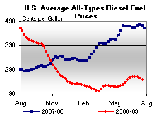

Released on July 22, 2009
(Next Release on July 29, 2009)
U.S. Oil Production Trends
The general rule is that oil production from mature areas, particularly regions that have been heavily exploited, decline over time. Consequently, global oil production growth depends on large oil projects, generally in “new” areas including deepwater offshore, or in previously inaccessible areas. Few oil producing regions are more mature than the United States, with cumulative production of about 198 billion barrels and, as of the end of 2007, only a little over 21 billion barrels of proved reserves. In general, a quick review of U.S. reserves trends over the past 5 years shows a lot of evidence of a fairly mature production environment.
Between 2003 and 2007, oil reserve additions in the United States totaled a little over 7.4 billion barrels. Production, however, totaled almost 8.8 billion barrels, so net reserves declined by almost 1.4 billion barrels over that period. On average, net reserves for the United States as a whole declined by 1.2 percent per year, though they actually rose by 1.6 percent from 2006 to 2007. The higher recent prices may have been a factor in the rise.
The most significant declines in reserves for the five-year period were in Federal waters offshore in the Lower-48 States. Oil reserve additions in the Federal offshore Lower-48 totaled a little over 1.2 billion barrels, but production totaled over 2.3 billion barrels, so net reserves declined by 1.1 billion barrels over that period, representing about four-fifths of the decline. On average, net reserves for the Federal offshore Lower-48 declined by almost 5 percent per year.
On- and offshore Alaskan production also declined over the five-year period. Alaskan oil reserve additions totaled almost one billion barrels, but production totaled over 1.5 billion barrels, so net reserves declined by a half a billion barrels over that period. On average, net Alaskan oil reserves declined by 2.2 percent per year over the 5-year period, though interestingly, reserves actually increased by 7.3 percent in 2007.
The strongest U.S. oil reserves performance during the five year period ending in 2007 came from the onshore Lower-48. During that period, oil reserve additions in the Lower-48 (excluding Federal offshore) totaled a little over 5.2 billion barrels. Production, totaled about 5 billion barrels, so net reserves increased slightly. On average over that period, net reserves for the lower 48 increased by 0.4 percent per year, though they rose by almost 2 percent over the 5-year period. A larger increase of a little over 6 percent was seen in 2005.
The nature of the oil production industry in the onshore Lower-48 has changed over time, shifting to smaller wells and smaller operators. Today’s production comes from more than 500,000 wells operated by more than 13,000 companies. Exploration in the Lower-48 no longer focuses on the search for large fields of, say, 100 million barrels. A five million or even a one million barrel oil discovery is enough to justify the investment. Many of these small discoveries have occurred within large, previously established oil fields. Improvements in infill drilling and recovery technologies in known oil plays have added both reserves and production. Nevertheless, there are some new plays – see the March 4, 2009 This Week in Petroleum for a description of the Bakken Formation.
U.S. Average Gasoline and Diesel Prices Fall Again
For the fourth consecutive week, the U.S. average price for regular gasoline fell, dropping about seven cents to $2.46 per gallon. The national average price has tumbled a total of nearly 23 cents over those four weeks, to bring the price to $1.60 below last year. Prices fell in all regions of the country, with the largest drops occurring in the Lower Atlantic area of the East Coast and in the Midwest. The price slipped seven cents on the East Coast to $2.47 per gallon. In the Midwest, the price fell about eight cents to $2.36 per gallon. The Gulf Coast continued to have the lowest price of any region, with a price dip of six cents to $2.32 per gallon. For the second week in a row, the price change in the Rocky Mountains was the smallest of any region, slipping four cents to $2.52 per gallon. On the West Coast, the price dropped a nickel to $2.77 per gallon. In California, the average price fell five cents to $2.83 per gallon.
Once again diesel prices fell in all regions of the country, with the U.S. average price dropping about five cents to $2.50 per gallon. That price was $2.22 below a year ago. On the East Coast and Gulf Coast, the averages slipped five cents to $2.51 and $2.44 per gallon, respectively. The average price in the Midwest fell four cents to $2.47 per gallon. The Rocky Mountain region recorded the largest decrease, falling six cents to $2.56 per gallon. The price on the West Coast dropped a nickel to $2.60 per gallon. In California, the price dipped two cents to $2.70 per gallon.
Propane Build Reports Solid Gains
Inventories of propane at the primary level continued to rack up solid gains last week, up by 2.0 million barrels to finish the week of July 17, 2009 at an estimated 66.4 million barrels. Most of the weekly gain occurred in the Midwest, where inventories rose by 1.4 million barrels. Additional gains were also reported in the combined Rocky Mountain/West Coast region with inventories rising by 0.6 million barrels. Elsewhere, inventories remained relatively unchanged in the East Coast but gained less than 0.1 million barrels in the Gulf Coast region last week. Propylene non-fuel use inventories remained relatively unchanged last week although its share to total propane/propylene inventories edged slightly lower to 3.1 percent, compared with the prior week’s 3.2 percent share.
Text from the previous editions of “This Week In Petroleum” is now accessible through a link at the top right-hand corner of this page.
| Retail Prices (Cents Per Gallon) | |||||||
|  | |||||||
| Retail Data | Changes From | Retail Data | Changes From | ||||
| 07/20/09 | Week | Year | 07/20/09 | Week | Year | ||
| Gasoline | 246.3 | Diesel Fuel | 249.6 | ||||
| Spot Prices (Cents Per Gallon*) | |||||||||||||||||||||||||||||||||||
|
|||||||||||||||||||||||||||||||||||
| *Note: Crude Oil WTI Price in Dollars per Barrel. | |||||||||||||||||||||||||||||||||||
| Stocks (Million Barrels) | |||||||
| Stocks Data | Changes From | Stocks Data | Changes From | ||||
| 07/17/09 | Week | Year | 07/17/09 | Week | Year | ||
| Crude Oil | 342.7 | Distillate | 160.5 | ||||
| Gasoline | 215.4 | Propane | 66.429 | ||||